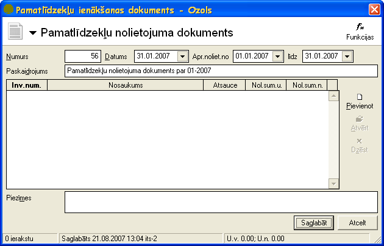
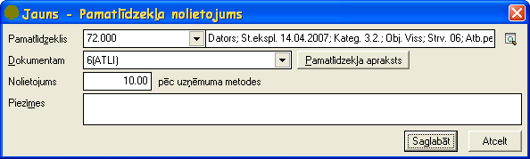
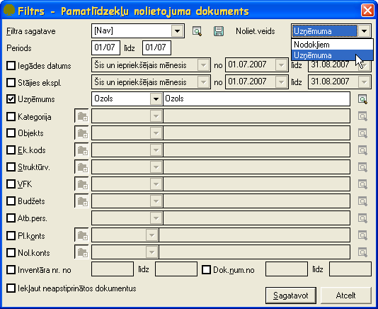

Pamatlīdzekļu nolietojuma dokuments¶
Pamatlīdzekļu nolietojuma dokuments paredzēts pamatlīdzekļu nolietojuma (gan finanšu, gan nodokļu vajadzībām) aprēķināšanai. Nolietojumu iespējams aprēķināt automatizēti pēc lietotāja atlases nosacījumiem izvēlētai pamatlīdzekļu grupai un lietotāja izvēlētam periodam. Dokuments pēc saglabāšanas tiek pievienots Pamatlīdzekļu dokumentu sarakstā .
Pievienojot jaunu dokumentu jāizvēlas pamatlīdzekļu dokumenta veids Pamatlīdzekļu nolietojuma dokuments .
{kind=link}
Jāaizpilda dokumenta virsraksta dati:
Numurs - jānorāda pamatlīdzekļa dokumenta numurs. Šis numurs strādājot ar sistēmu tiek piešķirts automātiski pēc iebūvētā numeratora . Visiem pamatlīdzekļu dokumentiem ir viena numerācija.
Datums - pamatlīdzekļu dokumenta datums.
Apr.noliet.no -
līdz -
Paskaidrojums - jānorāda dokumenta paskaidrojums.
Piezīmes - iespējams norādīt piezīmes par dokumentu un šīs piezīmes domātas tikai grāmatvedim. Pamatlīdzekļu atskaitēs šīs piezīmes netiek uzrādītas.
Saglabāt - pēc dokumenta datu un pamatlīdzekļu nolietojuma (skat. zemāk Pamatlīdzekļu nolietojuma aprēķināšana ) pievienošanas jāspiež šī komandpoga lai saglabātu izveidoto dokumentu.
Atcelt - ja lietotājs nevēlas saglabāt veiktās izmaiņas, jāspiež komandpoga Atcelt.

Lai izveidotā Pamatlīdzekļunolietojuma dokumenta dati stātos spēkā obligāti pēc saglabāšanas dokuments ir jāapstiprina ar funkciju .. image:: images_ozols/24715.gif
- scale
100%
.
Pēc dokumenta apstiprināšanas Pamatlīdzekļu nolietojumadokuments ir jānogrāmato .
Pamatlīdzekļu nolietojuma aprēķināšana¶
Pamatlīdzekļu nolietojuma dokumentā pamatlīdzekļu nolietojuma aprēķinamir 2 metodes.
Pamatlīdzekļu nolietojuma aprēķināšanas Metode 1¶
Jaunu pamatlīdzekļa nolietojumu pievieno ar funkciju .. image:: images_ozols/24708.png
- scale
100%
. Formā Jauns - Pamatlīdzekļa nolietojums laukā Pamatlīdzeklis jāizvēlas pamatlīdzeklis un laukā Nolietojums jānorāda nolietojuma summa manuāli .
Pēc šīs metodes nolietojuma summu iespējams norādīt tikai vienam pamatlīdzeklim un tikai manuāli, tāpēc šī metode jāizvēlas tikai specifiskos gadījumos, kad lietotājs vēlas pievienot nolietojumu vienam vai dažiem pamatlīdzekļiem un nolietojuma summu norādīt manuāli. Lai rēķinātu nolietojumu automātiski pēc lietotāja kritērijiem atlasītai pamatlīdzekļu grupai, jāizvēlas pamatlīdzekļu nolietojuma aprēķināšanas Metode 2 .
Pamatlīdzekļa nolietojumuiespējams labot atvērtā Pamatlīdzekļunolietojuma dokumenta formā ar funkciju .. image:: images_ozols/24709.png
- scale
100%
.
Pamatlīdzekļa nolietojumudzēš atvērtā Pamatlīdzekļunolietojuma ievades dokumenta formā ar funkciju

.
{kind=link}
Saglabāt - pamatlīdzekļa nolietojuma saglabāšana.
Atcelt - pamatlīdzekļa nolietojuma atcelšana.
Pamatlīdzekļu nolietojuma aprēķināšanas Metode 2¶
Pamatlīdzekļu nolietojumadokumentā jāspiežizvēlne Funkcijas un jāizvēlas funkcija Nolietojuma aprēķins .
{kind=link}
Formā Filtrs - Pamatlīdzekļu nolietojuma dokuments jānorāda pamatlīdzekļu atlases nosacījumus.
{kind=link}
Obligāti jānorāda:
Nolietojuma veids laukā Noliet.veids :
Uzņēmuma - pamatlīdzekļiem tiks aprēķināts nolietojums finanšu vajadzībām;
Nodokļiem - pamatlīdzekļiem tiks aprēķināts nolietojums nodokļu vajadzībām.
Periods - jānorāda periods no līdz. Šajos laukos pirmajās divās zīmēs jānorāda mēnesis, bet aiz slīpsvītras jānorāda gada pēdējās divas zīmes.
Sagatavot - veic aprēķinus pēc lietotāja norādītajiem atlases nosacījumiem.
Atcelt - atceļ aprēķinu veikšanu.